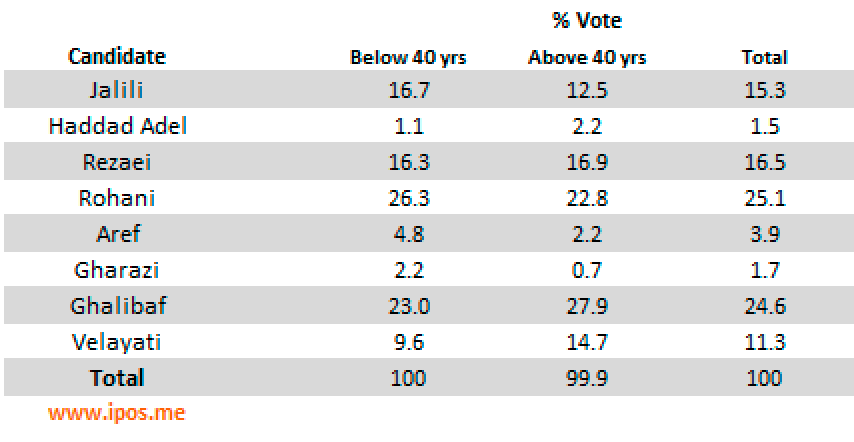

This survey was conducted as part of iPOS' daily tracking polls of Iran's presidential election on June 8-11, 2013.
Here are our latest findings:
Question: If you were going to vote today, which candidate you would vote for?
The above table shows results from respondents who have said they will vote on Election Day and includes the undecided voters.
Question: If you were going to vote today, which candidate you would vote for?
The above table shows results from respondents who have decided which candidate they will vote for today.
The below table shows the percentage votes disaggregated by gender:
The below table shows the percentage of votes disaggregated by age groups (below 40 years old and above 40 years old):

The below table shows the percentage of votes disaggregated based on education level (Without college degree, With some college or more):
Survey Methods:
iPOS results are based on telephone interviews conducted as part of our daily presidential tracking poll with a random sample of 1,067 Iranian adults aged 18 and older currently residing in Iran.
Our proportional two stages sample includes respondents on landline and cellular phones for every province.
Based on our sample, we can say with 95% confidence that the margin of sampling error is ± 3 percentage point.
Trained interviewers conduct the interviews during the Iran’s daytime.